图像生成和编辑内容与意图
淘天集团 · AI原生多模态生成团队
AI NATIVE MULTIMODAL GENERATION
直面消费者的
AIGC 图像与视频生成
淘天集团AI原生多模态生成团队
我们是淘天集团 AI 原生多模态生成团队，专注多模态内容理解与生成，以领先算法重塑用户体验、驱动产品创新，赋能 AI 试衣、时尚创意内容与商品智能素材等电商场景。持续攻坚生成算法基础问题，打造高效稳定的 C 端商用级生成模型。
实时交互视频统一能力
C 端商用模型高效稳定
电商场景落地规模化体验
RESEARCH → PRODUCT → IMPACT从生成基础问题，走向真实消费体验
01AI NATIVE / MULTIMODAL GENERATION
淘宝业务场景
从技术到消费体验
规模化全量上线
淘宝 App、千问购物助手、千问 App 多场景全量上线，让算法进入真实消费者的日常购物链路。
真实海量消费者
累计服务了数千万真实消费者，完成数亿次试穿任务，为海量用户带来了切实的体验提升。
用户一致好评
作为淘宝最受欢迎的 AI 应用，获得了来自用户的高度好评和更多的功能期待。
功能持续拓展
围绕穿搭导购和助手场景，未来会有更多图像和视频功能上线，是 AIGC toC 落地最具想象力的场景之一。
立即体验
打开手机淘宝，搜索 AI试穿 即可体验
02AI NATIVE / MULTIMODAL GENERATION
商用试穿算法
Tstars-Tryon 1.0
COMMERCIAL-SCALE VIRTUAL TRY-ON
面向真实消费场景的全栈商用试穿系统
Tstars-Tryon 1.0 是淘宝 AI 试穿的算法内核。团队将虚拟试穿重构为统一的多图图像编辑任务，围绕数据治理、MMDiT 模型架构、渐进式训练与 RL 精调、Prompt 增强、CFG 与步数蒸馏完成全栈优化，在鲁棒性、真实感、组合灵活性和生成效率之间取得商用级突破。
5B精简主干 DiT3.92s最快单件生成6.74s多件试穿生成1—6 件自由组合试穿8 类服饰与配饰
Robust and Realistic Virtual Try-on in the Wild
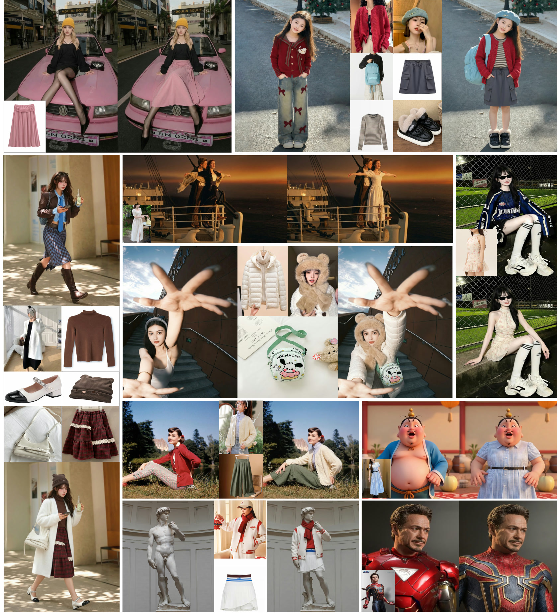
面向真实消费环境，在复杂人物、服饰与背景分布下稳定保持身份一致、服饰保真与自然质感。
Supports Multiple Challenging, Extreme and Complex Scenarios Virtual Try-on
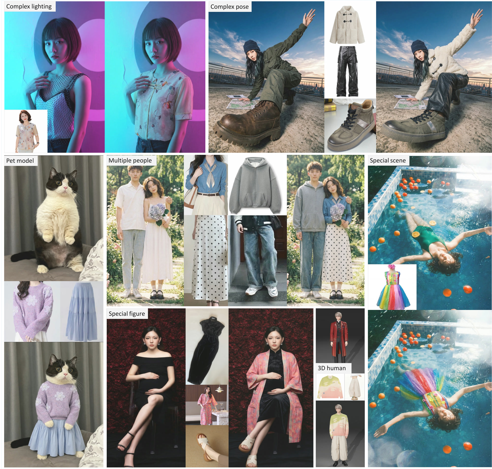
覆盖复杂光照、极端姿态、多人、宠物、特殊场景与非典型主体等长尾试穿需求。
GSB 评测获得业界 SOTA 水平
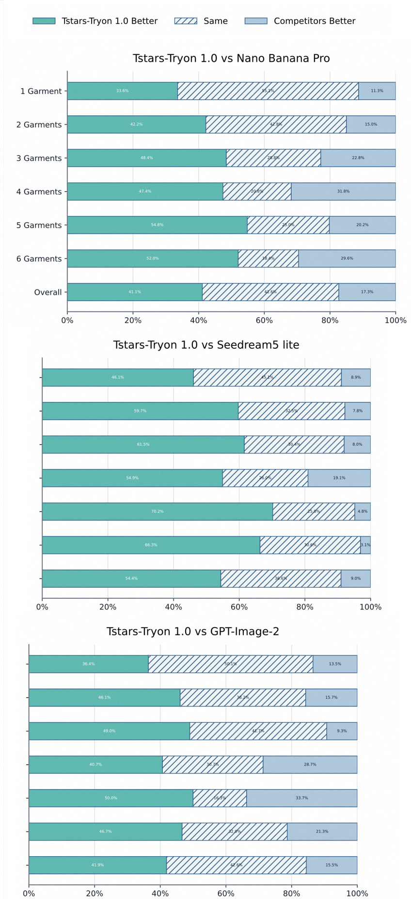
在人类偏好 GSB 评测中全面领先 Nano Banana Pro、Seedream 5 Lite 与 GPT Image 2，达到业界 SOTA 水平。
极端场景鲁棒
覆盖极端姿态、过曝、运动模糊、非常规视角与复杂背景，在真实分布下保持稳定输出。
身份结构保持
稳定保留人物身份、体型、姿态与背景，遵循物理规律，结果自然可信。
端到端多模态试穿生成流程
人物图像服饰图像文本描述
→统一多图编辑模型Tstar Tryon Model
→数据引擎渐进式训练RL + 蒸馏
身份一致服饰保真真实自然
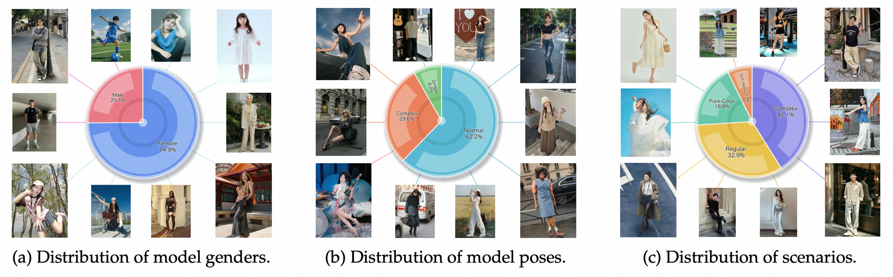
INDUSTRY SOTA
在真实场景、分布广泛的评测集上取得业界 SOTA，综合效果超越 Nano Banana Pro 与 GPT Image 2。
材质细节保真
精准还原服饰纹理、材质、结构与复杂叠穿关系，显著减少常见 AI 伪影。
近实时商用部署
5B 主干结合 CFG 蒸馏与步数蒸馏，单件最快 3.92 秒，多件 6.74 秒。
03AI NATIVE / MULTIMODAL GENERATION
高效图像模型
训练 · 数据 · 评测
从高效的模型设计、训练范式、大规模数据链路到泛化评测方案，形成“数据—模型—训练—评测”为一体的迭代闭环。
TEXT TO IMAGE
T2I 图像生成
IMAGE EDITING
Edit 图像编辑
训练工程
Swift-Image
统一基模的高效训练与推理
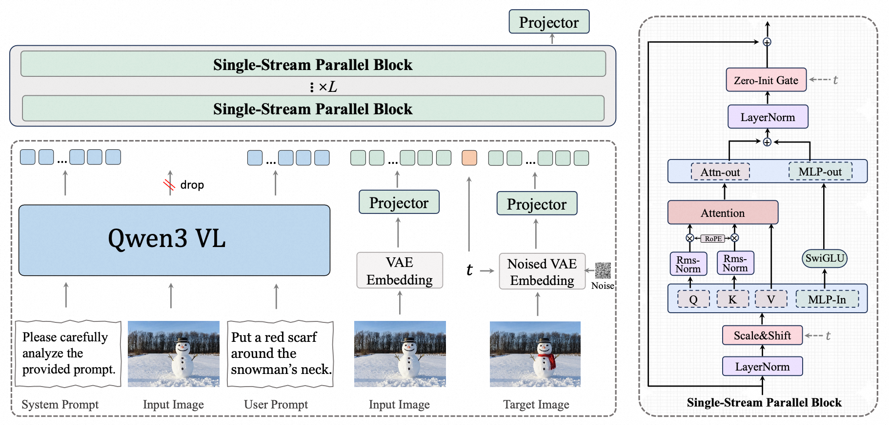
从渐进预训练、持续预训练到专家并行强化学习与多教师蒸馏，构建统一的图像生成与编辑模型，并通过少步蒸馏面向高效部署。
PAPER · ARXIVSwift-Image: Exploring the Performance Frontier of Compact Unified Image Generation Models阅读论文 ↗能力数据
Capability-Centric Data
以能力为中心的数据设计
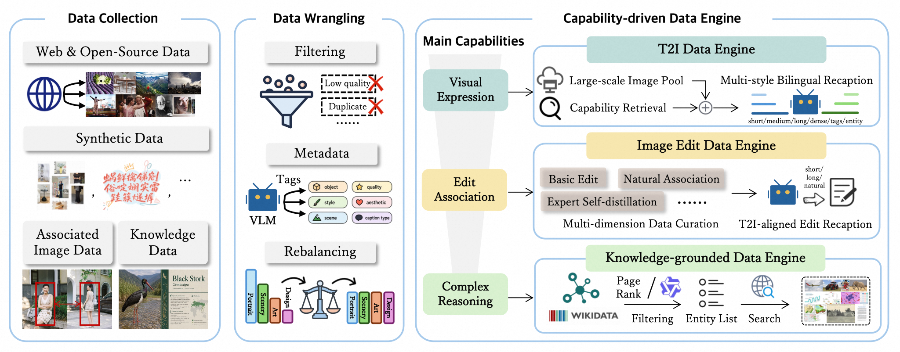
围绕视觉表达、编辑关联与复杂推理搭建三类数据引擎，让数据建设从规模导向转向能力导向，系统覆盖生成、编辑和知识增强任务。
PAPER · ARXIVFrom Corpora to Co-Evolving Capabilities: Capability-Centric Data Design for Generalist Image Generation阅读论文 ↗真实评测
CPI-Bench
面向真实需求的能力评测
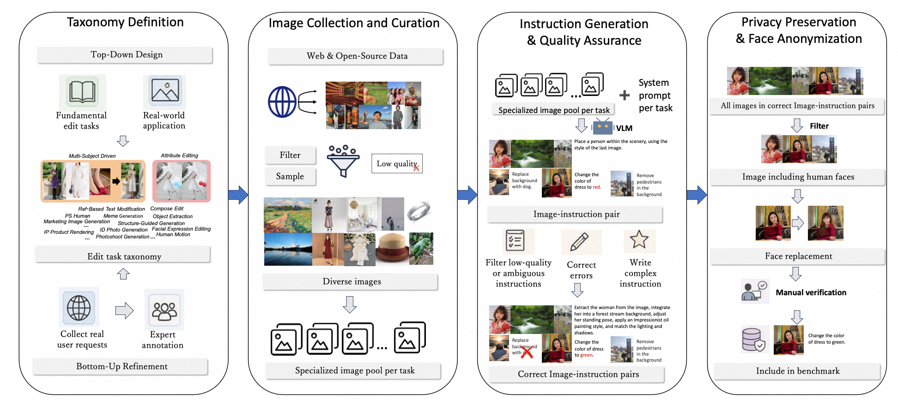
从通用能力、实用场景与智能推理三个维度构建评测，覆盖真实创作需求与复杂编辑任务，让模型能力能够被系统、可解释地衡量。
PAPER · ARXIVCPI-Bench: A Comprehensive, Practical and Intelligent Benchmark for Real-World Image Editing阅读论文 ↗04AI NATIVE / MULTIMODAL GENERATION
实时交互视频
二维生成到交互式 4D
优质
ID 一致性、Motion 合理性与整体美观度
泛化
支持任意用户个人形象与任意服饰 ID
鲁棒
保障每次生成的稳定性与输出质量
速度
降低用户等待时长，持续提升交互体验
效率
降低资源成本，支持大规模业务调用并支持实时生成
可交互
在实时的基础之上为更多交互形式创建基础
ACM MM 2024
Tunnel Try-on
首个基于 Diffusion 的视频试衣
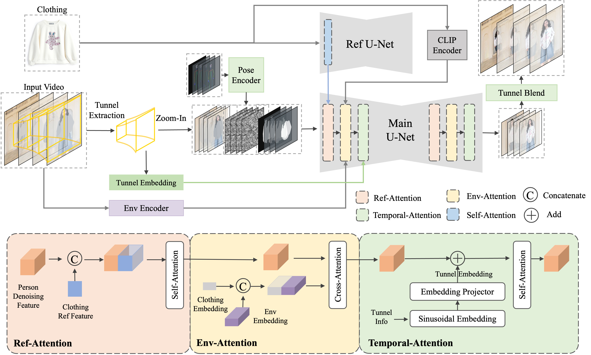
在时空隧道中组织服饰特征，生成高质量、高一致性的视频试衣结果。
ACM MM 2024Tunnel Try-on: Excavating Spatial-temporal Tunnels for High-quality Virtual Try-on in Videos阅读论文 ↗ICML 2026
iTryOn
动作与语义交互
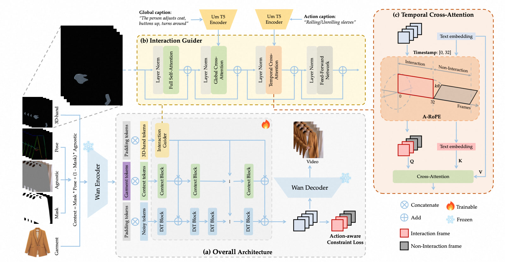
融合动作引导与语义理解，实现对人物动作与服饰语义的交互式控制。
ICML 2026iTryOn: Mastering Interactive Video Virtual Try-On with Spatial-Semantic Guidance阅读论文 ↗ECCV 2026
TryOnCrafter
3D 增强与镜头可控
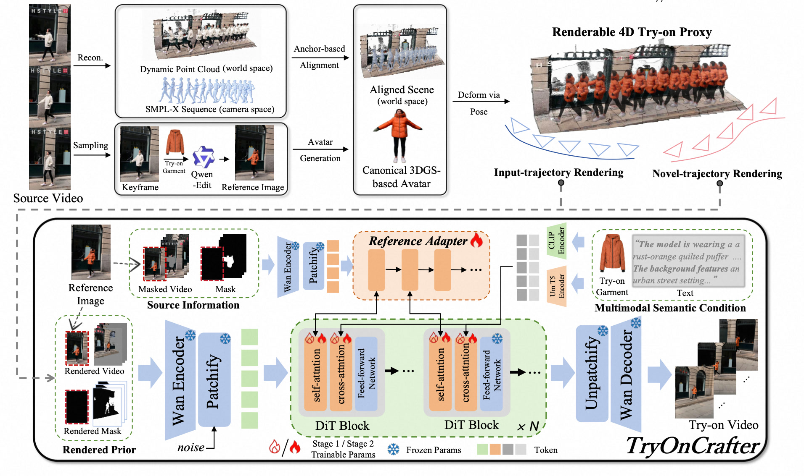
引入可渲染的 4D 试衣代理，增强跨视角稳定性并支持镜头轨迹控制。
ECCV 2026TryOnCrafter: Unleashing Camera Trajectories for Realistic Video Virtual Try-on via a Renderable 4D Try-on Proxy阅读论文 ↗NeurIPS 2026 [UR]
FashionChameleon
流式交互生成
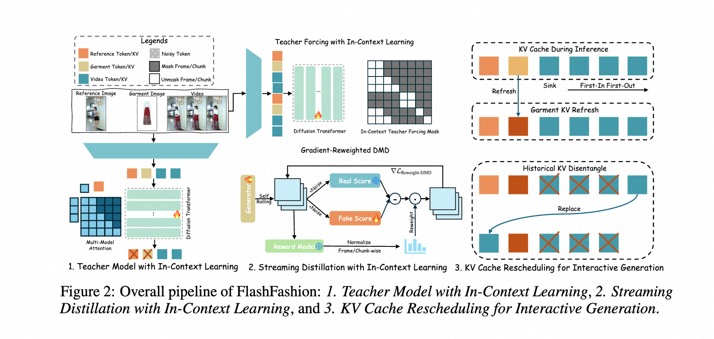
面向实时交互的流式视频生成框架，让连续、即时的试衣体验成为可能。
NeurIPS 2026 [UR]FashionChameleon: Towards Real-Time and Interactive Human-Garment Video Customization阅读论文 ↗05AI NATIVE / MULTIMODAL GENERATION
团队学术论文
Publications
- What Matters for Diffusion-Friendly Latent Manifold? Prior-Aligned Autoencoders for Latent DiffusionNeurIPS 2026 [UR]
- FashionChameleon: Towards Real-Time and Interactive Human-Garment Video CustomizationNeurIPS 2026 [UR]
- TryOnCrafter: Unleashing Camera Trajectories for Realistic Video Virtual Try-on via a Renderable 4D Try-on ProxyECCV 2026
- Continuous-Time Distribution Matching for Few-Step Diffusion DistillationNeurIPS 2026 [UR]
- Tstars-Tryon 1.0: Robust and Realistic Virtual Try-On for Diverse Fashion ItemsREPORT
- iTryOn: Mastering Interactive Video Virtual Try-On with Spatial-Semantic GuidanceICML 2026
- ORION: Decoupling and Alignment for Unified Autoregressive Understanding and GenerationICLR 2026
- Swift-Image: Exploring the Performance Frontier of Compact Unified Image Generation ModelsREPORT
- From Corpora to Co-Evolving Capabilities: Capability-Centric Data Design for Generalist Image GenerationREPORT
- CPI-Bench: A Comprehensive, Practical and Intelligent Benchmark for Real-World Image EditingREPORT
- ExpertVerse: A General-Purpose Benchmark for Expert-Level Reasoning in Knowledge-Intensive Visual SynthesisAAAI 2027 [UR]
- DENOISER: Rethinking the Robustness for Open-Vocabulary Action RecognitionICIP 2026
- Squeeze Out Tokens from Sample for Finer-Grained Data GovernanceICIP 2026
- Beyond Static Scenes: Camera-controllable Background Generation for Human MotionICME 2026
- Improving Human Image Animation via Semantic Representation AlignmentCVPR 2026 Workshop
- Advancing Myopia to Holism: Fully Contrastive Language-Image Pre-trainingCVPR 2025
- DepthDance: Complex-pose Human Image Animation with Appearance-agnostic Depth GuidanceICCV 2025
- Zero-shot Image Editing with Reference ImitationNeurIPS 2024
- LivePhoto: Real Image Animation with Text-guided Motion ControlECCV 2024
- Wear-Any-Way: Manipulable Virtual Try-on via Sparse Correspondence AlignmentECCV 2024
- Tunnel Try-on: Excavating Spatial-temporal Tunnels for High-quality Virtual Try-on in VideosACM MM 2024
JOIN US · 加入我们与我们一起，
与我们一起，
打造下一代电商 AI
我们热忱欢迎对多模态生成技术充满热情、富有探索精神的同学加入我们，一起打造下一代电商 AI 创新业态！
实习 · 校招 · 社招cmt271286@taobao.com投递简历 ↗